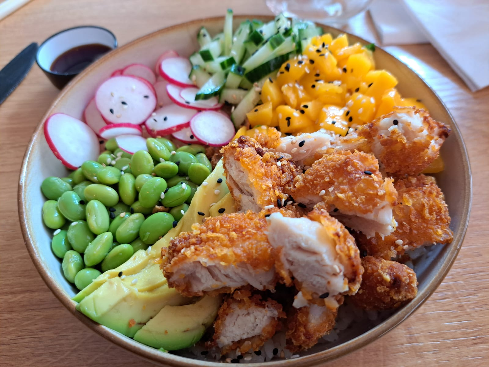

Crisped Chicken Pokebowl

Instructions
1
Prepare the Rice
Cook the sushi rice according to package instructions. While warm, gently fold in a mixture of rice vinegar, sugar, and salt. Let it cool to room temperature.
2
Crisp the Protein
If using chicken, toss the pieces in cornstarch. Sear in a hot pan with oil until crispy and golden. If using salmon, you can sear it or serve it raw (sushi-grade) depending on your preference.
3
Prep the Toppings
Slice the avocado, cucumber, and radishes. Dice the mango and ensure the edamame is cooked and shelled.
4
Build the Bowl
Start with a generous base of seasoned rice in each bowl.
5
Arrange the Ingredients
Group the avocado, cucumber, mango, radish, and edamame on top of the rice, leaving space in the center.
6
Serve
Place the crispy chicken (or salmon) in the center. Drizzle with soy sauce or your favorite ginger-soy dressing.